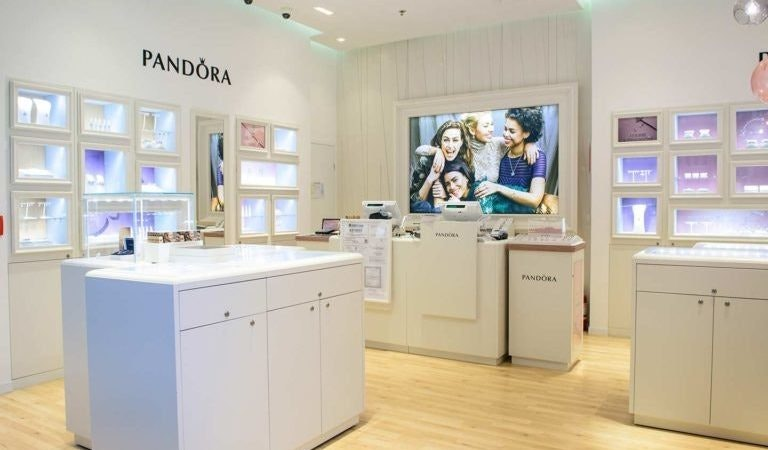
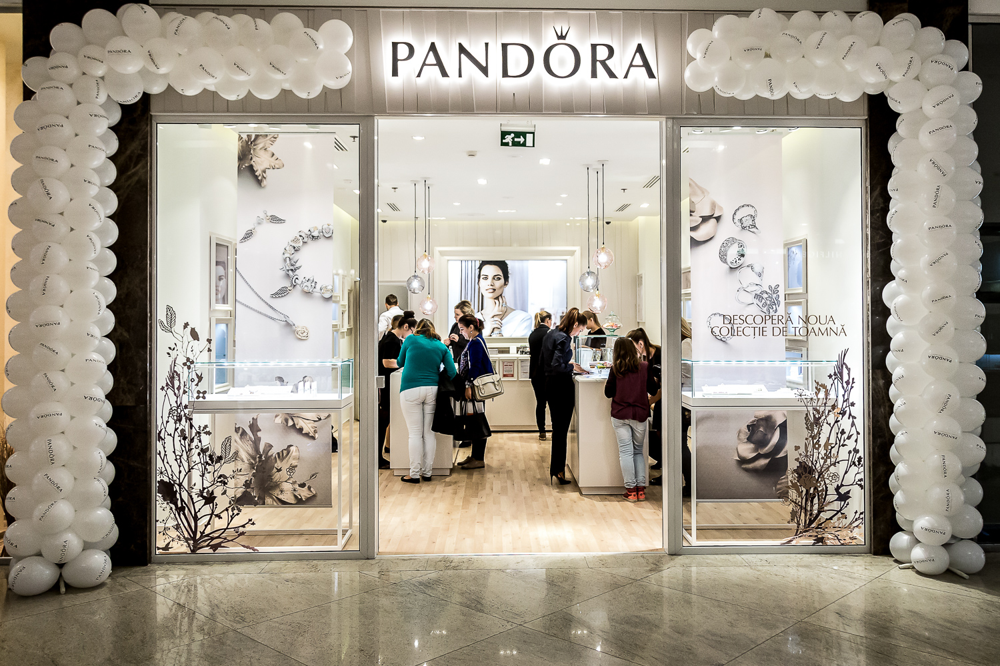

Povestea PANDORA este despre o companie cu un brand si produse cu caracteristici distinctive, care, in doar cativa ani, a avut o evolutie exceptionala, micul bijutier danez local devenind o companie lider mondial de bijuterii, cu vanzari in peste 100 de tari.
1982-1999: Primii ani de activitate Totul a inceput cu 30 de ani in urma. in 1982, in imprejurimile modeste ale Copenhagai, Danemarca, bijutierul danez Per Enevoldsen si sotia sa, Winnie, au infiintat un magazin de bijuterii care, intr-o zi, urma sa devina PANDORA.
Inca de la inceput, cei doi au calatorit frecvent in Thailanda, in cautarea de bijuterii pentru import. Deoarece cererea crestea, s-au orientat treptat catre vanzarea angro catre clienti din Danemarca.
In 1987, dupa cativa ani in care s-au bucurat de succes in vanzarea angro, activitatile de vanzare cu amanuntul au fost intrerupte, iar compania s-a mutat intr-un spatiu mai mare. intre timp, primul designer intern s-a alaturat companiei, iar PANDORA a inceput sa se concentreze pe crearea de bijuterii unice proprii. in 1989, compania a decis sa inceapa sa isi fabrice bijuteriile in Thailanda.
2000-2009: Construirea unei prezente internationale Conceptul PANDORA de bratara cu talisman se lansa pe piata daneza in anul 2000. Conceptul a placut consumatorilor si, in anii ce au urmat, in contextul unei cereri crescande incurajatoare, compania a inceput sa se extinda la nivel international, patrunzand pe piete noi, precum piata din Statele Unite, in 2003, si pe pietele din Germania si Australia, in 2004.
In anii urmatori, PANDORA si-a extins rapid prezenta pe piata, trecand de la o platforma scandinava, catre o platforma internationala de marketing si vanzari, controlata, in principal, de distribuitori terti si de capacitati de productie puternice din Thailanda.
In scopul cresterii capacitatii sale de productie, in anul 2005, PANDORA a deschis in Thailanda o fabrica de dimensiuni mari, cu sase niveluri, detinuta in totalitate de aceasta, care inca constituie o parte centrala a productiei si a infrastructurii curente. in august 2008, o a doua fabrica a fost deschisa in aceeasi zona, urmand ca, in 2010, sa fie deschise, tot in aceeasi zona, cea de-a treia si cea de-a patra fabrica, lucru care a dus la consolidarea mediului nostru unic de productie.
In prezent PANDORA utilizeaza si administreaza un model de afaceri integrat vertical, de la designul si productia interne, pana la comercializarea la nivel global si distributia directa pe majoritatea pietelor. Produsele sunt vandute in peste 100 de tari de pe sase continente, prin intermediul a peste 7.700 de puncte de vanzare, inclusiv prin aproximativ 2.600 de magazine concept.
Misiunea PANDORA de atunci si de acum este de a oferi femeilor din intreaga lume, un univers de bijuterii de calitate superioara, finisate manual, moderne si originale, la preturi accesibile, prin care le incurajeaza sa isi exprime personalitatea. Fiecare femeie are propria ei poveste – o colectie personala de momente speciale care le fac ceea ce sunt. De aceea celebram aceste momente. De aceea credem ca aceste momente sunt de neuitat. Ca si povestea PANDORA. 